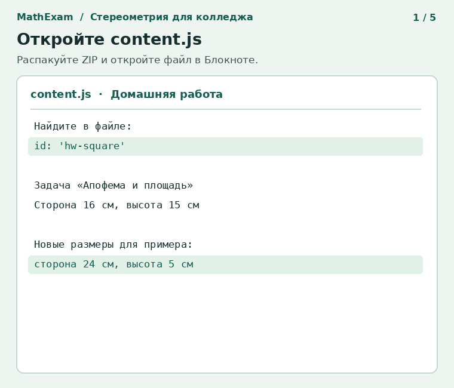

MathExam · Стереометрия для колледжа · Урок 6
Как изменить задание
Открыть урок без интернета
- Распакуйте весь ZIP в одну папку. Для каждого ученика можно создать свою копию папки.
- Дважды щёлкните по
index.html. Исследование, чертежи, задачи и самопроверка работают прямо в браузере. - Чтобы вернуться к ответам, откройте тот же файл в том же профиле браузера. Если браузер ограничивает локальное сохранение, урок покажет предупреждение о временном хранении.
Пример · «Апофема и площадь»
Поменяем сторону основания с 16 на 24 см и высоту с 15 на 5 см. Апофема равна √(5² + 12²) = 13 см. Боковая площадь равна 96 · 13 / 2 = 624 см².
- Откройте
content.jsв Блокноте или другом текстовом редакторе. Найдитеid: 'hw-square'. - Замените блок задания от строки
idдо закрывающей скобки массиваsteps, как показано ниже. Новыйidотделяет сохранённые ответы новой задачи от старых.
id: 'hw-square-v2', title: 'Апофема и площадь',
condition: 'Сторона основания правильной квадратной пирамиды равна 24 см, высота равна 5 см. Найди апофему и боковую площадь.',
figure: () => regularPyramid(4, 24, 5),
steps: [
step('Апофема', 13, 'см', 'Половина стороны квадрата и высота тела — катеты.', 'ℓ = √(5² + 12²) = 13 см.', 'apothem'),
step('Боковая площадь', 624, 'см²', 'Найди периметр квадрата и возьми половину его произведения на апофему.', 'Sбок = 96 · 13/2 = 624 см².', 'face')
]- Сохраните файл в UTF-8 под именем
content.js. Обновите вкладку с уроком и откройте «Домашняя работа» → «1». - Сверьте новые размеры с условием и поверните чертёж. Нажмите «Проверить ответы» с прежними числами 17 и 544, затем с новыми 13 и 624. Два старых ответа должны быть отклонены, два новых приняты. Откройте разбор и сверьте вычисления.

Как изменить другую задачу
У каждой задачи в массивах guided («Вместе») и homework («Домашняя работа») есть условие condition, чертёж figure и шаги steps. Согласуйте числа в этих трёх местах. В каждом step после названия идёт проверяемый ответ, затем единица измерения, подсказка, разбор и название подсветки чертежа. Для точного ответа √65 используется rootAnswer(65). Задайте изменённой задаче новый уникальный id. Сохраняйте id: '239' у задачи №239, если нужна прямая ссылка из шпаргалки. Для другой версии №239 сделайте отдельную копию папки.